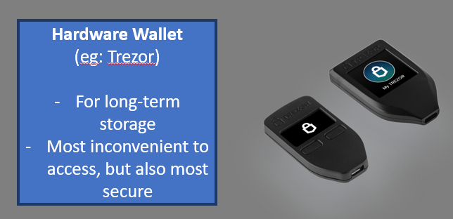

4 Jun 21: Yield farming - a HODL level-up
2 Jun 21: Wallets & Security
30 May 21: Decentraland: The Virtual Tour
26 May 21: How my strategy adapted post-crash of 190521
16 May 21: 1st post on crypto portfolio strategy
5 Jun 21:
Crypto Portfolio update
Self explanatory update to my crypto portfolio. Thought it'd be more useful to readers to have a more interactive 'Sunburst' chart vs a static doughnut chart.
How to read chart:
(It's interactive, so click away to explore the different compositions of use cases and chains. After clicking through the different levels, click the 'arrow button' on the top-right corner to move back up a level.):
Outer-most ring = Tokens invested (Hover for % weight)
Middle ring = Use case of token
Inner-most ring = Native chain of the token
Back up top...
4 Jun 21:
Yield farming - a HODL level-up
So now you're convinced you'd like to dip your toes into Crypto and HODL a few tokens in your wallet. That's great, but I'm sure you're asking yourself if you could do better. There's always a 'better' way in crypto, but it typically involves more risk. If you're prepared for that, read on. If not, give this a pass and keep your tokens SAFU in your wallets.
The above is a screenshot of one of the most popular De-fi borrowing/lending platforms in Crypto: AAVE. What's of immediate interest are the DEPOSIT and BORROW APYs (Annual % Yields). A simple strategy (as with fiat money in the 'meat' world) is to just deposit your tokens on this platform to earn the respective DEPOSIT APYs. This works through smart contracts which increment your holdings regularly, although the APYs can fluctuate depending on total deposits/borrowings, etc. The smart contract code integrity and volatility of rates present the key risks involved in locking up your tokens on a platform like this.
At current time of writing, Polygon(MATIC) has an ongoing promotion where they incentivise users on the Polygon Network by giving away MATIC tokens for depositing and borrowing on AAVE using the Polygon chain (see the smaller print below the respective APYs). The different chains are a topic in itself for another post, but if one is familiar enough the rewards can be significant. The keen-eyed would notice that the MATIC reward APYs are even higher than the borrow APYs, meaning that you actually profit from borrowing funds. To do so, you'd first need to deposit tokens to meet their collateral requirements. Do note that borrowing crypto especially with collateral that has low-correlation price movements expose you to liquidation risk, which is similar to a punitive margin call in trading.
There are other means of 'farming' yield for other tokens, with additional elements of risk to watch out for before you dive in. Let's jump into one example: the CAKE token on the PancakeSwap platform:
Depositing (Staking) CAKE token on the platform gives 125% APY?!? really?
Yes, really. But there's always a catch. I find it's generally a good idea to ask 'what's the catch' when yields get too good to be true in crypto. Without going into too much detail, tokens in general provide yield through token emissions/inflation (increased supply of tokens via its hardcoded emission rate) or through getting a cut of fees on the platform. In CAKE's case, the emission rate is ~100% in the first year (decreasing thereafter), but it means that when you invest in CAKE as a token, you need to be aware of these tokenomics (or the characteristics of the token: current circulating supply, supply growth rate and eventual total supply).
And for an investment in a token like CAKE to be profitable, you need to believe that the yield through staking + any potential increase in market price will outweigh the natural devaluation of the token via its increased supply.
There's no such thing as a free lunch. Investing in Crypto comes with risk. Yield farming adds on further elements of risk, but can be profitable if you know what you're doing. Feel free to get in touch if you're keen to find out more.
Back up top...
2 Jun 21:
Wallets and Security
While Crypto investing can be fun (more so when markets work in your favour), one aspect I'd strongly recommend paying attention to is security of your tokens and wallets.
This can't be emphasised enough: in the world of Crypto, once someone gets hold of your wallet's private keys, they have full access to your tokens and can drain them in a matter of seconds (or minutes, depending on the chain used). This is something that doesn't hit home as strongly because we're all used to a world where there's a support hotline to call or email when we've lost our passwords / lost our funds. There's effectively no customer support or central body to call for password / fund recovery. Once funds are successfully sent, it's irretrievably gone. That's why holding Crypto directly isn't for everyone, especially not if you've a tendency to lose your passwords. If you're still not put off and still reading at this point, read on to find my personal take on some security options available:
- Centralised Exchange: (eg: keeping tokens on Binance, etc)
It used not to be recommended to keep your Crypto balances on centralised exchanges due to infamous incidences of entire exchanges going down in the hands of hackers (google 'Mt Gox'). However, it has become increasingly accepted that these exchanges have now learnt from past mistakes and beefed up in-house security significantly such that the likelihood of a hack causing loss of funds is minimal. It still means that the exchange controllers could technically still run off with all the Crypto sitting with them if they had malicious intent, but at some point there has to be trust that they won't be 'killing their golden goose' by doing that. Binance has 3FA (SMS + Email) and whitelist address options that significantly enhance security.
Recommendation: If you're not tech-saavy, leaving the storage of your tokens on the exchange is fuss-free: you don't have private keys or recovery seed phrases to remember, securely store, and worry about losing. Most exchanges will also have customer support to guide you through queries and issues you might face. It is therefore vital to choose as reputable an exchange as possible - for me, I use Binance to store the portion of my portfolio meant for short-term trading.
- Online 'Hot' Wallets: (eg: MetaMask)
You'll likely face this option only when interacting with De-Fi platforms which require depositing, swapping tokens via web interfaces. While this is deemed to be the most convenient option for transferring tokens and interaction with De-Fi projects, the ease of use also comes with the downside of being the most exposed to hacking / keylogging malware.
Recommendation: If you really have to use an online 'hot' wallet, it is recommended to maintain minimal crypto funds on it, and also ensure you have the latest anti-virus, anti-malware software installed on your PC. As an additional precaution, it's also advised to enter your wallet password using a virtual keyboard (i.e. using mouseclicks vs typing it via keyboard) - this is to prevent keyloggers from gaining access to your password should your anti-malware/anti-virus safe-guards fail.
- Soft Wallet App: (eg: Coinomi)
This is a relatively straightforward option where you download a trusted wallet app on your smartphone, preferably secured using your fingerprint. Most wallet apps now integrate the option of direct purchase of Crypto via the wallet, but the convenience often comes at the expense of additional transaction fees, so I wouldn't advise this over buying Crypto from your main exchange and then withdrawing it directly to the relevant wallet. Apart from that, the wallet primarily serves to store/send/receive Crypto.
Recommendation: I use this wallet to store my longer-term tokens that I plan to HODL (not a spelling error, google it), and those that don't require interactions with a web-based De-Fi platform.

- Hardware Wallet: (eg: Trezor)
I have to admit I had greater hopes regarding the functionality of this cool-looking hardware wallet. The experience of setting one of these up required some software installation and firmware updates. This wallet basically connects to your PC via USB and has a software interface where you add your Crypto and further customise the functionalities of the wallet while the device is connected. Sad to say at the point of writing, the hardware wallet didn't support some of the newer tokens which put me off transferring tokens here. There is also support on MetaMask for these hardware wallets should you wish to interact with De-fi plaforms.
Recommendation: If you are a long-term HODL-er and can put up with the inconveniences of the hardware wallet, this is the most secure option available since you'd need the physical device for transactions. However, it is important to note that if someone gains access to your hardware wallet's seed/recovery phrase, they would still be able to steal your funds as with any 'hot' or 'soft' wallet.
Back up top...
30 May 21:
Decentraland: The Virtual Tour
So enough about portfolio allocation, the crypto crash and onto more light-hearted and fun stuff. In these times of the Covid pandemic, what better way to scratch your travel itch than to visit a virtual world where you could meet new friends and potentially make some money off owning real-estate? IMHO, there's no better way to bridge the real 'meat' world and the virtual world of NFTs through a platform like Decentraland (DCL). Let's dive straight in.
First, the basics:
DCL is a virtual world where you have the ability to own plots of LAND (which are NFTs) within a fixed, pre-generated environment. You can build and create simple 3D improvements to your plot of LAND, which I will go into more detail later. LAND and other in-game wearable purchases can be made using DCL's native token, MANA. As the DCL world is built on the Ethereum blockchain, gas fees are paid in ETH for all payment transactions. At the time of writing, LAND isn't considered 'cheap' by any measure, and the cheapest parcel (one smallest unit you can own) goes for around 4,500 MANA (~USD 3.3k). Gas fees on the ETH network can also add painfully to the bill when the network gets congested.
A map of the pre-generated DCL world is below. Total LAND: 96,601 parcels, broken down into ~44k private parcels (dark grey), ~34k district parcels (blue/purple), 9k parcels of road (light grey) and 4k parcels of plaza (green). The private parcels are the ones you can own/buy/sell.

source: market.decentraland.org
So this (below) is the starting spawn point of DCL, after you enter the world by clicking a few links from here: The DCL world runs from your browser, so no installation of any sort is required. However, the game can only be run on PCs and not mobile phones at this point.

Your movement in DCL is controlled either by a 1st-person perspective or 3rd-person depending on your preference. And you move/look around using the standard 'WASD' keys and your mouse. It will come second nature to those used to playing FPS or 3D action RPGs. The game doesn't make it obvious for beginners, but the starting spawn point I believe is to get people to read announcements and event notices. To start the game, you need to dive into the whirlpool.
After you emerge from the whirlpool and the DCL lobby, the below view is pretty much the start of the DCL world that you'll see. The in-game graphics are pretty simple, but I'm guessing that there are limitations to what a browser-based game engine can deliver.
You can walk around and explore the world at your own time, but there is a simple in-game teleportation mechanic if you wish to visit a specific parcel of land: just enter "/goto X,Y" in the chat bar, where X and Y are the respective coordinates desired. Let's head over to my personal parcel to have a look, shall we?

So the above is my plot (27,-145). Thanks for visiting.
Virtual land purchased with real-life money, and with cautious optimism... profits to be realised in the future (please re-read disclaimers above). Once again, graphics are nothing to shout about. But you can customise and build your plot with a simple in-game builder which gives you access to a library of 3D assets to plonk around in your estate. You can actually build much more complex structures and buildings (see the glass multi-story house in the background) using 3rd-party 3D-modelling software and importing the build, but I won't go into that in this post.
The coolest basic feature for me is having the ability to display an NFT collection via canvases - you can see my starter collection peeking out from behind the coconut trees. Pretty cool huh?
Apart from that, DCL developers are still fleshing out mechanics where you can play some simple games like betting virtual currency on a horse race, playing simple arcade games through a partnership with Atari... but I believe this is just the beginning. As our PCs and mobile phones get more powerful, the technical aspects of the DCL world will only improve, and with it, exponentially grow the potential of this virtual world.
Well that sums up a quick tour and first-impressions of DCL. Feel free to get in touch if you've any comments or queries.
Back up top...
26 May 21:
How my strategy adapted post-THE Crash

What. A. Ride.
Even though I've followed my own advice to only invest with money I can afford to lose, to go from a +50% to -50% portfolio position in a matter of days is something that I would safely say is a new nerve-wracking experience for me.
So after the dust has settled, the dollar-cost averaging implemented, how does the portfolio now look?
For one, MATIC (Polygon) has been bumped up to one of my core 'foundational layer' tokens. The widespread growth and acceptance of this L2 solution to ETH's scaling issues has just been phenomenal, resulting in its dramatic growth in value within the portfolio. To the keen-eyed, you will notice that MATIC has already 'flipped' BTC (16.0% vs 14.1%). I've decided to leave the allocation as such due to my belief in its potential to outperform.
Another significant change comes in the form of an increased allocation to AAVE (to 9.4%), due mainly to the MATIC (Polygon) rewards on their platform. Although the rewards program only lasts for a limited time, it's worth checking out due to the incentives for both lending and borrowing. It's also a good opportunity to understand the dynamic lending/borrowing environment on an established De-Fi platform while earning a decent return on your tokens. The rewards are given in wMATIC (wrapped MATIC) tokens which require a bit of magic on QuickSwap to unwrap, but not exactly rocket-science either.
The rest of the tokens are my 'revealed' VC-type allocation. While I recognise that some of these tokens to some would be already considered mainstream, my thesis is that all these tokens still have at least a 5x-10x potential, especially when pegged to BTC's market cap. Going forward, I will start to explore tokens lower down the list of main-stream-ness, but for now these are the chosen ones. All these tokens are kept to a 5% or lower allocation. These tokens can be broadly categorised into Chains (Solana, Fantom), Oracles (Chainlink) and Dexes/De-fi platforms (Sushi, Yearn, Pancakeswap).
Of course there's the small allocation to NFTs (Decentraland, some NFT art). I'll likely go into the Decentraland experience in more detail in a later post. Watch this space.
16 May 21:
First thoughts on Crypto: Getting past the 1st wave of resistance
Only read on if you've gotten past the mind-boggling issues paralyzing the mainstream now regarding issues of: "Isn't crypto a scam?", "Isn't it bad for the environment?" and "The governments are going to ban it all!"
Portfolio diversification:
This is my personal investment style, whether thru traditional finance (Equities) or Crypto. It's always less exciting to have your returns channelled through 15-20 assets within a portfolio, vs just holding a single asset. But it allows me to sleep soundly at night, and that's just priceless.
Model portfolio of tokens diversified across five segments: 3 'blue-chips' (BTC, ETH, BNB) + a 'VC-style' sub-portfolio of tokens + small allocation to NFT art

[20-30%] BTC : Digital Gold
If you haven't heard of Bitcoin(BTC), you've probably been living in a cave somewhere. No excuses even during Covid times... The concept of BTC being digital gold has been bandied around for awhile now, and when enough people believe in it, it eventually becomes true. Strong belief that BTC will remain an undeniable store of value for a long time to come.
Criticisms: Proof of Work needs to go - extremely inefficient method of validation. Improvements (if any) are likely to be a price catalyst.
[20-30%] ETH : Crypto's Foundational Platform
ETH has always played 2nd fiddle to BTC since the inception of Cryptocurrencies, but has recently become the go-to platform for blockchain app development and the foundation for all things De-Fi (decentralised finance). Smart Contract capability allows everything from DExes (Decentralised Exchanges) to NFTs to be built on the Ethereum platform, and has given a corresponding boost to ETH demand. The move towards PoS (Proof of Stake) can only further its potential and value.
Criticisms: ETH has become a victim of its own success. Gas fees (transaction fees) have now become relatively exorbitant due to the surge in on-chain traffic. We're all very much looking forward to ETH v2 (in progress).
[20-30%] BNB : Mainstream's gateway and super-app
Binance is the largest crypto exchange in the world, and its CEO, CZ's visionary plans for the company contributes to growth in leaps and bounds. BNB is the native token of the Binance Exchange, and its utility can only see tremendous upside given increased interest in Crypto trading and functionality built within the Binance Eco-system (eg: upcoming NFT Marketplace). Being the fiat gateway for hordes of new investors every day, it is perfectly positioned to take advantage of the impending movement of Crypto going mainstream.
Criticisms: Binance, being a Central Exchange, can be said to be going against the true ideals of the Crypto World: that of trustlessness and decentralisation. As the De-Fi movement gathers pace, will Binance still remain relevant in the long term?
[15-25%] VC Allocation : focused on Defi and some retail-friendly projects
Some of the categories of the high-risk/high-potential projects include: L1 and L2 chain tokens and defi-exchange native tokens. I'll probably go into more of that in a later post, as this section is constantly evolving.
[3-7%] NFTs? : Still not getting this as images not stored on-chain
...but doesn't mean it won't make you tons of $$$. To each his own. I've recently invested in a parcel of LAND within Decentraland. It's not NFT art, but LAND (an NFT native to Decentraland depicting ownership of virtual real estate) is something more understandable to me (see my trad-fi investments in REITS within the real world). Will also aim to go a little more into the Decentraland experience in a later post.
Back up top...